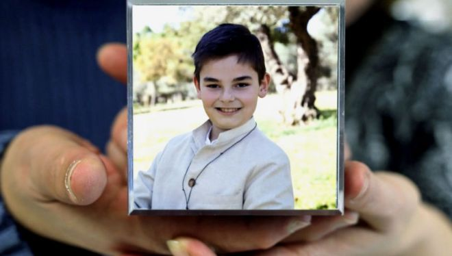

Así recuerda Carmen González el momento en que descubrió que su hijo Diego, de 11 años, acababa de tirarse por la ventana desde el quinto piso del hogar familiar: «Yo estaba levantada pero no me enteré de que se había movido de la habitación. Yo... Miré y vi las zapatillas en el suelo, con lo cual no pensé que él se había levantado, porque yo le tenía que dar unos temas de repaso de Naturales y Sociales. Entonces, cuando me di cuenta, me metí en la habitación, no le vi y le busqué como loca por toda la casa y vi, en el fondo de la cocina, la mampara abierta, me acerqué y... Con la oscuridad vi su sombra, en el suelo. Vivimos en un quinto», explica a EL MUNDO.En el alféizar de la ventana había un mensaje: «Mirad en Lucho». Lucho es el muñeco amarillo de los Lunnis, su juguete fetiche desde bebé, con el que jugaba a hacer guiñol con su padre. En la habitación, Lucho guardaba un cuaderno, y así contaba Diego, con una aparente madurez desde luego impropia de sus 11 años, las razones que le llevaron al suicidio: «Papá, mamá... espero que algún día podáis odiarme un poquito menos. Yo no aguanto ir al colegio y no hay otra manera para no ir», dejó escrito a sus padres.A continuación se despide de cada uno de sus seres queridos: «Papá, tú me has enseñado a ser buena persona y a cumplir las promesas (...). Mamá, tú me has cuidado muchísimo y me has llevado a muchos sitios (...). Tata, tú has aguantado muchas cosas por mí y por papá (...). Abuelo, tú siempre has sido muy generoso conmigo y te has preocupado por mí...Los hechos sucedieron el pasado 14 de octubre y, pese a la misiva del niño y al testimonio de varios padres que refieren problemas de acoso en el colegio, la Policía descartó que se tratara de un caso de 'bullying' y la juez de Instrucción 1 de Leganés se dispone a archivar la causa. «Sólo le pedimos a la magistrada que se ponga en nuestro lugar y que, al menos, investigue hasta el final», dice Carmen. «En ese colegio están pasando cosas raras y, al menos, hay que investigarlo», remarca su marido, Manuel.Responsables del centro, el Nuestra Señora de los Ángeles, en el barrio de Villaverde (Madrid), se negaron ayer a comentar nada a este diario y remitieron a la Consejería de Educación de la Comunidad de Madrid, que en su momento abrió una inspección que arrojó resultado negativo.Cuando el cuerpo de Diego ya estaba en el tanatorio, un forense y unos policías se presentaron en el lugar para tomarle al cadáver muestras que pudieran conducir a abusos sexuales, «y sin embargo esas muestras no han sido analizadas jamás», afirma Robinson Guerrero, el abogado de la familia.
